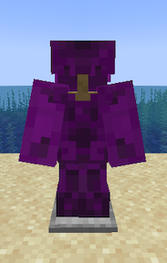
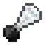
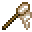
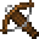

Item Behaviours
Item behaviours define specific functionalities associated with items, blocks, and decorations.
All behaviours are optional, and some are mutually exclusive (e.g., trap, shoot, and instrument).
Example with some behaviours set:
id: mynamespace:multi_example
vanillaItem: minecraft:paper
itemResource:
models:
default: mynamespace:custom/misc/clown_horn
trapped: mynamespace:custom/misc/clown_horn_trapped
behaviour:
instrument:
sound: mynamespace:misc.honk
range: 64
useDuration: 60
shoot:
consumes: false
baseDamage: 2.0
speed: 1.0
projectile: minecraft:iron_axe
sound: mynamespace:misc.shoot
trap:
types:
- minecraft:villager
- minecraft:zombie
- minecraft:skeleton
requiredEffects:
- minecraft:glowing
chance: 75
useDuration: 0
fuel:
value: 10
cosmetic:
slot: head
model: mynamespace:custom/models/clown_backpack_animated
autoplay: idle
scale: [1.5, 1.5, 1.5]
translation: [0.0, 0.5, 0.0]
execute:
consumes: true
command: "summon minecraft:creeper ~ ~ ~ {powered:1b}"
sound: minecraft:block.anvil.place
{
"id": "mynamespace:multi_example",
"vanillaItem": "minecraft:paper",
"itemResource": {
"models": {
"default": "mynamespace:custom/misc/clown_horn",
"trapped": "mynamespace:custom/misc/clown_horn_trapped"
}
},
"behaviour": {
"instrument": {
"sound": "mynamespace:misc.honk",
"range": 64,
"useDuration": 60
},
"shoot": {
"consumes": false,
"baseDamage": 2.0,
"speed": 1.0,
"projectile": "minecraft:iron_axe",
"sound": "mynamespace:misc.shoot"
},
"trap": {
"types": ["minecraft:villager", "minecraft:zombie", "minecraft:skeleton"],
"requiredEffects": ["minecraft:glowing"],
"chance": 75,
"useDuration": 0
},
"fuel": {
"value": 10
},
"cosmetic": {
"slot": "head",
"model": "mynamespace:custom/models/clown_backpack_animated",
"autoplay": "idle",
"scale": [1.5, 1.5, 1.5],
"translation": [0.0, 0.5, 0.0]
},
"execute": {
"consumes": true,
"command": "summon minecraft:creeper ~ ~ ~ {powered:1b}",
"sound": "minecraft:block.anvil.place"
}
}
}
generate_trim_models behaviour

Enables automatic generation of the different item models with the trim overlay.
Important
Configurable Fields:
type_prefix: Allows to specify a custom trim overlay texture. See the vanilla texture atlas files for the different paletted permutations andassets/minecraft/textures/trims/items/for a list of textures available. For armors: This prefix will replace the default armor slot texture path like this:assets/minecraft/textures/trims/items/<prefix>_trim_<material>. For non-armors it will insert the prefix as the full path. If not specified it will automatically chose correct prefix for the slot the item can be equipped in.custom_materials: List of identifiers for custom trim materials. Empty by defaultmaterials: List of vanilla trim materials. Default values include all vanilla trim materials:["minecraft:quartz", "minecraft:iron", "minecraft:netherite", "minecraft:redstone", ...]
compostable behaviour

Makes the item usable in composters.
Important
Configurable Fields:
chance: Chance of raising the composter level by 1 between 0 and 100villagerInteraction: Allows farmer villagers to compost the item. Defaults totrue
cosmetic behaviour

Defines cosmetic behaviours for decorations, supporting animated Blockbench models for chestplates and simple item models.
Cosmetics are worn on the player using item display entities (except for the head slot)
Important
Configurable Fields:
slot: The equipment slot for the cosmetic (head or chest).model: Optional, the resource location of the animated blockbench or animated-java model for the cosmetic.autoplay: Optional, the name of the animation to autoplay, which should be loopable.scale: Scale of the chest cosmetic. Defaults to[1, 1, 1]translation: Translation of the chest cosmetic. Defaults to[0, 0, 0].rotation: Rotation of the chest cosmetic in euler angles. Defaults to[0, 0, 0].
Backpack:
cosmetic:
slot: chest
model: mynamespace:clown_backpack_animated
autoplay: idle
scale: [1.5, 1.5, 1.5]
translation: [0.0, 0.5, 0.0]
{
"cosmetic": {
"slot": "chest",
"model": "mynamespace:clown_backpack_animated",
"autoplay": "idle",
"scale": [1.5, 1.5, 1.5],
"translation": [0.0, 0.5, 0.0]
}
}
item_interact_execute behaviour
Executes a command on item use with the player as source, located at the player, with elevated permissions.
Important
Configurable Fields:
consumes: Flag whether the item is consumed after running the command(s). Defaults tofalsedamages: Flag whether the item is damaged after running the command(s). Defaults tofalsecommand: The command string to execute. Empty by defaultcommands: List of commands to execute. Empty by defaultsound: Optional sound effect to play during execution. Empty by defaultconsole: Run as server/console instead of as player
item_attack_execute behaviour
Executes a command when an entity is attacked with the item or when swinging at air, located at the player, with elevated permissions.
Important
Configurable Fields:
consumes: Flag whether the item is consumed after running the command(s). Defaults tofalsecommand: The command string to execute. Empty by defaultcommands: List of commands to execute. Empty by defaultsound: Optional sound effect to play during execution. Empty by defaultonEntityAttack: true/false flag whether to execute only when an entity was attacked. Otherwise the command will also be executed when the item is “swung” by the player. Default totrueconsole: Run as server/console instead of as player
villager_food behaviour

Makes the item edible for villagers (for villager breeding).
Important
Configurable Fields:
value: The amount of “breeding power” the item has (1 = normal food item, 4 = bread). Defaults to1
fuel behaviour
Defines fuel behaviour for items, specifying their value used in furnaces and similar item-burning blocks.
Important
Configurable Fields:
value: The value associated with the fuel, determining burn duration. Defaults to10
hoe behaviour
Gives the item the ability to till farmland, like vanilla hoes do, using 1 durability.
Important
Configurable Fields:
sound: Sound to play. Default to the vanilla hoe tilling soundminecraft:item.hoe.till
shovel behaviour
Gives the item the ability to change blocks to path blocks, like vanilla shovels do, using 1 durability.
Important
Configurable Fields:
sound: Sound to play. Default to the vanilla shovel sound
shears behaviour
Gives the item the ability to shears blocks & plants, like vanilla shears do, using 1 durability.
Important
Configurable Fields:
sound: Sound to play. Default to the vanilla plant shearing sound
instrument behaviour

Defines instrument behaviour for items, similar to goat horns.
Important
Configurable Fields:
sound: The sound associated with the instrument. Empty by defaultrange: The range of the instrument. Defaults to0useDuration: Delay in ticks for using the instrument. Defaults to0
stripper behaviour
Gives the item the ability to strip Logs/scrape copper blocks, like an axe. Uses 1 durability.
Important
Configurable Fields:
sound: Sound to play. Default to the vanilla axe strip sound
trap behaviour

Defines trap behaviour for items capable of trapping specific entity types.
Important
Configurable Fields:
types: List of allowed entity types to trap. Example:["minecraft:silverfish", "minecraft:spider"]requiredEffects: List of required effects for the trap. Example:["minecraft:weakness"]chance: Chance of the trap triggering (0-100). Defaults to50useDuration: Use cooldown for the trap item. Defaults to0
banner_pattern behaviour

Allows you to assign a banner pattern to an item for use in Looms.
See the mynamespace:bannertestitem item config in the example datapack in the GitHub repo.
Important
Configurable Fields:
id: The id of your banner_pattern in your datapack. Empty by default
bow behaviour

Vanilla-like bow behaviour. Lets you specify which item can be shot, but anything that is not an arrow or firework rocket will render as normal arrow. Allows to specify a power multiplier for shooting power. Supports firework rockets.
Warning
Make sure to use
minecraft:bowasvanillaItemin order for the item model overrides to work properly on MC versions below 1.21.4
Important
Configurable Fields:
powerMultiplier: The power multiplier. Defaults to3supportedProjectiles: List of supported items in the inventory for use with the bow. Defaults to["minecraft:arrow", "minecraft:spectral_arrow"]supportedHeldProjectiles: List of supported items for use when in main/offhand. Defaults to["minecraft:arrow", "minecraft:spectral_arrow", "minecraft:firework_rocket"]shootSound: The sound when shooting a projectile. Default tominecraft:entity.arrow.shoot
This behaviour can automatically generate the item model predicate overrides for bows (item assets in `items` in 1.21.4 or later).
In order to automatically generate an item model for bows, you have to provide models for default, pulling_0, pulling_1 and pulling_2 in the itemResource field:
Example:
itemResource:
models:
default: minecraft:custom/bow/custombow
pulling_0: minecraft:custom/bow/custombow_pulling_0
pulling_1: minecraft:custom/bow/custombow_pulling_1
pulling_2: minecraft:custom/bow/custombow_pulling_2
{
"itemResource": {
"models": {
"default": "minecraft:custom/bow/custombow",
"pulling_0": "minecraft:custom/bow/custombow_pulling_0",
"pulling_1": "minecraft:custom/bow/custombow_pulling_1",
"pulling_2": "minecraft:custom/bow/custombow_pulling_2"
}
}
}
Alternatively, you can use the itemModel field to provide your own item asset model
crossbow behaviour

Vanilla-like crossbow behaviour. Lets you specify which item can be shot, but anything that is not an arrow or firework rocket will render as normal arrow. Allows to specify a power multiplier for shooting power.
Warning
Make sure to use
minecraft:crossbowasvanillaItemin order for the item model overrides to work properly for MC versions below 1.21.4!
This behaviour can automatically generate the item model predicate overrides for crossbows (item assets in items in 1.21.4 or later).
In order to automatically generate an item model for crossbows, you have to provide models for default, pulling_0, pulling_1, pulling_2, arrow and rocket in the itemResource field:
Example:
itemResource:
models:
# model without projectile
default: minecraft:custom/crossbow/crossy1
pulling_0: minecraft:custom/crossbow/crossy1_pulling_0
pulling_1: minecraft:custom/crossbow/crossy1_pulling_1
pulling_2: minecraft:custom/crossbow/crossy1_pulling_2
# model with projectile
arrow: minecraft:custom/crossbow/crossy1_arrow
rocket: minecraft:custom/crossbow/crossy1_rocket
{
"itemResource": {
"models": {
"default": "minecraft:custom/crossbow/crossy1", // model without projectile
"pulling_0": "minecraft:custom/crossbow/crossy1_pulling_0",
"pulling_1": "minecraft:custom/crossbow/crossy1_pulling_1",
"pulling_2": "minecraft:custom/crossbow/crossy1_pulling_2",
"arrow": "minecraft:custom/crossbow/crossy1_arrow", // model with projectile
"rocket": "minecraft:custom/crossbow/crossy1_rocket" // model with projectile
}
}
}
Alternatively, you can use the itemModel field to provide your own item asset model.
Important
Configurable Fields:
powerMultiplier: The power multiplier. Defaults to1supportedProjectiles: List of supported items in the inventory for use with the crossbow. Defaults to["minecraft:arrow", "minecraft:spectral_arrow"]supportedHeldProjectiles: List of supported items for use when in main/offhand. Defaults to["minecraft:arrow", "minecraft:spectral_arrow", "minecraft:firework_rocket"]shootSound: The sound when shooting a projectile. Default tominecraft:item.crossbow.shootloadingStartSound: Projectile loading start sound. Default tominecraft:item.crossbow.loading_startloadingMiddleSound: Projectile loading middle sound. Default tominecraft:item.crossbow.loading_middleloadingEndSound: Projectile loading end sound. Default tominecraft:item.crossbow.loading_end
shoot behaviour
Defines behaviour for items capable of shooting custom projectiles or being shot themselves.
Important
Configurable Fields:
consumes: Indicates whether the shooting action consumes the item. Defaults tofalsedamages: Indicates whether the item gets damaged when using. Defaults tofalsebaseDamage: The base damage of the projectile. Defaults to2.0speed: The speed at which the projectile is fired. Defaults to1.0cooldown: Number of ticks between shots. Defaults to8projectile: The identifier for the projectile item. Empty by defaultpickupItem: Identifier for the item that can be picked up after the projectile lands. Empty by defaultdispenserSupport: Whether this item can be fired from a dispenser. Defaults tofalsecanPickUp: Whether the projectile can be picked up by players. Defaults tofalsedropAsItem: Whether the projectile should drop as an item when it hits. Defaults totruesound: Sound effect to play when shooting. Defaults tominecraft:item.trident.throwvolume: Volume of the shooting sound. Defaults to1.0pitch: Pitch of the shooting sound. Defaults to1.0hitSound: Sound to play when the projectile hits an entity. Defaults tominecraft:item.trident.hithitVolume: Volume of the hit sound. Defaults to1.0hitPitch: Pitch of the hit sound. Defaults to1.0hitGroundSound: Sound to play when the projectile hits the ground. Defaults tominecraft:item.trident.hit_grounddisplay: The display context of the item model (e.g.none,fixed, etc). Defaults tononerotation: Rotation of the projectile, expressed as a quaternion. Defaults to[0, 90, 0](Y-axis 90°)translation: Translation offset for the projectile. Defaults to[0, 0, 0]scale: Scale for the projectile model. Defaults to[0.6, 0.6, 0.6]
shield behaviour
Makes the item usable as shield.
This behaviour can automatically generate the item model predicate overrides for shields (item assets in items in 1.21.4 or later).
In order to automatically generate an item model for shields, you have to provide models for default and blocking in the itemResource field:
Example:
itemResource:
models:
default: minecraft:custom/shield/shield1
blocking: minecraft:custom/shield/shield1_blocking
{
"itemResource": {
"models": {
"default": "minecraft:custom/shield/shield1",
"blocking": "minecraft:custom/shield/shield1_blocking"
}
}
}
Alternatively, you can use the itemModel field to provide your own item asset model
fishing_rod behaviour
Makes the item behave like a fishing rod!
This behaviour can automatically generate the item model predicate overrides for fishing rods (item assets in items in 1.21.4 or later).
In order to automatically generate an item model for fishing rods, you have to provide models for default and cast in the itemResource field:
Example:
itemResource:
models:
default: minecraft:custom/rod/fire_rod
cast: minecraft:custom/rod/fire_rod_cast
{
"itemResource": {
"models": {
"default": "minecraft:custom/rod/fire_rod",
"cast": "minecraft:custom/rod/fire_rod_cast"
}
}
}
Alternatively, you can use the itemModel field to provide your own item asset model
trident behaviour
Warning
This behaviour is experimental and only supported in minecraft 1.21.4 or later
Makes the item behave like a trident!
This behaviour can automatically generate the item model predicate overrides for tridents.
In order to automatically generate an item model for tridents, you will have to provide models for default and throwing in the itemResource field:
Example:
itemResource:
models:
default: minecraft:custom/trident/nether_trident
throwing: minecraft:custom/trident/nether_trident_throwing
{
"itemResource": {
"models": {
"default": "minecraft:custom/trident/nether_trident",
"throwing": "minecraft:custom/trident/nether_trident_throwing"
}
}
}
Alternatively, you can use the itemModel field to provide your own item asset model
mace behaviour
Makes the item behave like a mace!
Important
Configurable Fields:
damageMultiplier: Damage multiplier when “smashing” an entity. Defaults to1.0
Example:
behaviour:
mace:
damageMultiplier: 1.0
{
"behaviour": {
"mace": {
"damageMultiplier": 1.0
}
}
}
wax behaviour
Allows to wax blocks using this item, similar to honeycomb with copper.
Important
Configurable Fields:
reduceDurability: Flag whether the items durability should be decreased instead of the item being consumed. Defaults tofalse
Example:
behaviour:
wax:
reduceDurability: false
{
"behaviour": {
"wax": {
"reduceDurability": false
}
}
}
snowball behaviour
Makes the item itself throwable like a snoball.
Important
Configurable Fields:
inaccuracy: Inaccuracy when throwing. Defaults to1.0power: Initial projectile power. Defaults to1.5dispenserSupport: Defaults tofalsehitCommand: Commands to run when the projectile hits anythinghitCommands: List of commands to run when the projectile hits anythingentityHitCommand: Commands to run when the projectile hits an entity.%target%gets replaced with the UUID of the hit entityentityHitCommands: List of commands to run when the projectile hits an entity.%target%gets replaced with the UUID of the hit entityexecuteAtHit: Whether to execute the commands at the hit position. Defaults totrue